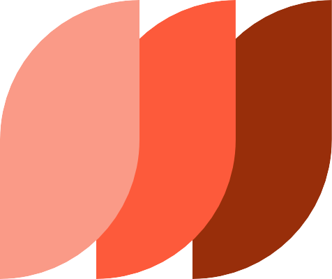

Dokumentom Standard za dijamantski otvoreni pristup (Diamond open Access Standard – DOAS) utvrđuju se standardi u oblasti dijamantskog otvorenog pristupa koji pomažu naučnim izdavačima da obezbede kvalitet i transparentnost u izdavanju časopisa.
Izvorna verzija DOAS-a namenjena je izdavačima i pružaocima usluga u oblasti dijamantskog otvorenog pristupa. Međutim, unapređenja na nivou pojedinačnih časopisa obično sprovode urednička tela. Kako bi se obezbedila šira primena, ovaj vodič prevodi zahteve DOAS-a u kontekst pojedinačnih časopisa, olakšavajući uredničkim telima da usklade svoje časopise sa zahtevima.
Ovaj vodič dopunjuje postojeće priručnike i kontrolne liste za unapređenje kvaliteta časopisa i može pomoći u pripremi časopisa za indeksiranje u Directory of Open Access Journals (DOAJ).
Kako se koristi DOAS vodič za časopise
Vodič daje pregled osnovnih zahteva (OBAVEZNO) i dodatnih preporuka za dalja unapređenja (PREPORUČENO) u okviru sedam ključnih komponenti naučnog izdavaštva:
- Finansiranje
- Pravno vlasništvo, misija i upravljanje
- Otvorena nauka
- Upravljanje uređivačkim procesima, kvalitet uređivanja i naučni integritet
- Tehnička efikasnost
- Vidljivost, komunikacija, marketing i uticaj
- Ravnopravnost, raznolikost, inkluzija i pripadnost (EDIB), višejezičnost i rodna ravnopravnost
Analizirajte svoj časopis u odnosu na ove zahteve i identifikujte oblasti koje je potrebno unaprediti.

Da bismo časopisima pomogli u pripremi za indeksiranje u DOAJ, zahteve koji se delimično ili u potpunosti podudaraju sa zahtevima DOAJ obeležili smo ovim znakom.
1. Finansiranje
Iako se u dijamantskom otvorenom pristupu ne naplaćuju nadoknade ni od autora, ni od čitalaca, troškovi ipak postoje. Da bi se obezbedila finansijska održivost ovog pravednijeg modela naučnog izdavaštva i njegov kratkoročni, srednjoročni i dugoročni razvoj, neophodno je definisati kriterijume kvaliteta.
1.1. Model dijamantskog otvorenog pristupa
OBAVEZNO
Pristup sadržaju nije uslovljen plaćanjem nadoknade: Časopis ne naplaćuje naknadu ni za objavljivanje radova, ni za čitanje sadržaja.
Transparentnost u vezi sa nadoknadama: Časopis na svom veb-sajtu jasno navodi da se ne naplaćuju nikakve naknade – ni autorima za objavljivanje radova, ni čitaocima za čitanje sadržaja – kao i informacije o eventualnim drugim troškovima, ukoliko postoje.
1.2. Održivost
OBAVEZNO
Finansijska podrška: Časopis se direktno ili indirektno finansira javnim sredstvima ili iz drugih izvora prihoda kako bi omogućio da pristup bude besplatan i za autore i za čitaoce, a ta sredstva u idealnom slučaju pokrivaju sve troškove.
PREPORUČENO
Troškovi: Troškovi se prate iz godine u godinu. Časopisi mogu da planiraju svoje godišnje troškove i usklade ih sa očekivanim prihodima i nemonetarnim doprinosima uz pomoć sistema za praćenje troškova kao što je budžet.
Plan održivosti: Časopis vodi računa o svojoj srednjoročnoj ekonomskoj održivosti. Ima jasan pregled raspoloživih izvora finansiranja i drugih relevantnih spoljašnjih i unutrašnjih (nemonetarnih) resursa, usklađenih sa očekivanim budućim troškovima održavanja i razvoja. Poželjno je da se u ostvarivanju svojih ciljeva časopis oslanja na saradnju i zajedničke otvorene infrastrukture, kako bi smanjio troškove i povećao efikasnost.
Transparentnost finansiranja: Izjava o izvorima finansiranja časopisa dostupna je na njegovom veb-sajtu. Nemonetarni i volonterski doprinosi su priznati i javno navedeni.
1.3. Nezavisnost uređivanja
OBAVEZNO
Uredničke aktivnosti: Uredničke aktivnosti koje se odnose na sadržaj časopisa i postupak recenzije nezavisne su i odvijaju se bez uticaja tela koja finansijski podržavaju izdavača ili časopis.
PREPORUČENO
Izvori prihoda: Poreklo prihoda usklađeno je sa vrednostima, očekivanjima i tradicijom naučnih oblasti u kojima je časopis aktivan. Prihodi ne utiču na nezavisnost uređivanja. Ukoliko postoji sukob interesa između dodatnih izvora prihoda (uključujući i komercijalne aktivnosti) i autora, recenzenata ili urednika, to je jasno naznačeno.
2. Pravno vlasništvo, misija i upravljanje
Kvalitet naučnog izdavaštva u dijamantskom otvorenom pristupu mora se podržati kroz uspostavljanje transparentnih, čvrstih struktura vlasništva okrenutih ka zajednici, kao i kroz definisanje misije i mehanizama upravljanja. Da bi se održao vrednosni okvir izdavaštva u dijamantskom otvorenom pristupu, suštinski je važno da vlasništvo nad naučnim izdavaštvom ostane u rukama naučne zajednice i u javnom domenu. Pored toga, treba podsticati kontrolu od strane naučne zajednice, dostupnost, odgovornost i saradnju.
2.1. Vlasništvo
OBAVEZNO
Naučna zajednica: Časopis mora biti u vlasništvu javne ili neprofitne organizacije (ili njenih delova) čija misija uključuje sprovođenje ili podsticanje istraživanja i naučnog rada.
Izjava o vlasništvu: Izjava o vlasništvu nad časopisom dostupna je na veb-sajtu časopisa. Ona ukazuje na pravni odnos između izdavača i časopisa i jasno i nedvosmisleno definiše dužnosti i prava urednika. Sadrži i informacije o okolnostima koje mogu dovesti do gašenja časopisa, kao i o preuzimanju i očuvanju svega onoga što tom časopisu pripada.
Promene vlasništva: Promene vlasništva, odnosa i prava/obaveza izdavača moraju se sprovoditi pažljivo i transparentno. Promena pružaoca usluga (npr. infrastrukture za izdavanje časopisa) može se izvršiti bez promene naslova časopisa, vlasnika ili izdavača.
Transparentnost vlasništva: Na veb-sajtu časopisa jasno su navedene informacije o vlasničkoj strukturi.
2.2. Misija i upravljanje
OBAVEZNO
Misija: Na veb-sajtu časopisa jasno su istaknuti izjava o misiji, ciljevi i tematski okviri.
Izdavač: Na veb-sajtu časopisa mora biti naveden naziv izdavača, kao i njegova adresa i link do njegovog veb-sajta, ako postoji. Podaci o izdavaču na veb-sajtu časopisa moraju se poklapati sa informacijama prikazanim na ISSN portalu.
Saizdavaštvo: Odnosi između saizdavača definisani su formalnim ugovorima i jasno su istaknuti na veb-sajtu časopisa.
Uloge i obaveze: izdavač i uređivačka tela: Uloge i obaveze izdavača, uređivačkih tela, vlasnika i izdavača prema autorima, recenzentima, čitaocima i naučnoj zajednici, vlasnicima časopisa i platformi, kao i prema široj javnosti.
Postupak izbora: Procedure za izbor članova uređivačkih tela, uključujući i trajanje mandata, redovan proces izbora novog sastava i procedure za raspuštanje uredništva jasno su definisani.
Uloge i obaveze: recenzija: Uloge i obaveze u vezi sa procesom recenzije moraju biti detaljno opisane na veb-sajtu časopisa, pri čemu ključni aspekti procesa recenzije ne smeju biti prepušteni tehničarima ili veštačkoj inteligenciji.
PREPORUČENO
Vodeća uloga naučne zajednice: Časopis sarađuje sa akterima iz naučne zajednice i omogućava im da učestvuju u određivanju strateškog pravca i donošenju odluka. Na veb-sajtu časopisa su objavljene informacije o tome.
2.3. Odnosi sa pružaocima usluga
PREPORUČENO
Ugovori između izdavača i pružalaca usluga: Izdavač ima jasno definisane (npr. Ugovorima o korišćenju servisa i usluga) komercijalne i nekomercijalne odnose sa različitim pružaocima usluga koji su odgovorni za pojedine tehničke i netehničke aspekte radnog procesa (npr. vlasništvo nad infrastrukturom, usluge lektorisanja i tehničke obrade teksta i sl.).
3. Otvorene naučne prakse
Razvoj naučnog izdavaštva u dijamantskom otvorenom pristupu tesno je povezan sa razvojem otvorene nauke. Otvorena nauka obuhvata prakse i metode zasnovane na transparentnosti, saradnji i otvorenosti u naučnim istraživanjima. Ove prakse doprinose većoj dostupnosti, ponovljivosti (reproducibilnosti) i uticaju istraživanja, kroz podsticanje deljenja istraživačkih podataka, metoda i rezultata.
3.1 Otvorene politike
OBAVEZNO
Otvoreni pristup: Časopis je u otvorenom pristupu.
Omogućavanje autorima da ispune obaveze u vezi sa otvorenim pristupom: Časopis omogućava autorima da ispune zahteve finansijera u vezi sa otvorenim pristupom, kao i obaveze definisane institucionalnim i/ili nacionalnim politikama otvorenog pristupa u vezi sa člancima u časopisima.
Istraživački podaci: Svestan da je dostupnost podataka na osnovu kojih su izvedeni zaključci iz naučnih članaka značajna za verifikaciju zaključaka i ponovljivost rezultata, časopis ima politiku dostupnosti istraživačkih podataka. Informacije o tome dostupne su na veb-sajtu časopisa.
PREPORUČENO
Politika o istraživačkim podacima: Politika časopisa podstiče autore da istraživačke podatke na osnovu kojih su izvedeni zaključci iz naučnih članaka stave na uvid urednicima i recenzentima tokom recenzije i propisuje da podaci treba da budu dostupni svima u trenutku objavljivanja, u skladu sa FAIR principima, u repozitorijumima u kojima se dodeljuju trajni identifikatori, uspostavljaju uzajamne veze između publikacija i podataka i podci se opiscuju detaljnim metapodacima, koji su javno dostupni.
Istraživački protokoli i metode: Politika časopisa podstiče deljenje istraživačkih protokola i metoda u javnim repozitorijumima koji dodeljuju trajne identifikatore. Ovo je dobra otvorena istraživačka praksa koja omogućava drugima da ponove i unaprede objavljena istraživanja.
Otvoreni istraživački softver: Kako bi se omogućila ponovljivosti istraživanja i primena FAIR principa, časopis podstiče korišćenje slobodnog softvera, odnosno softvera otvorenog koda. Časopis ima politiku o dostupnosti istraživačkog softvera, a od autora se zahteva izjava o dostupnosti softvera.
Objavljivanje i deljenje negativnih naučnih rezultata: Časopis priznaje da objavljivanje negativnih ili neočekivanih naučnih rezultata, kao i podataka koji ne potvrđuju početne hipoteze i dizajn eksperimenata, doprinosi napretku nauke i naučnog znanja i podstiče autore da prijavljuju rukopise koji iznose upravo takve rezultate.
3.2. Autorska prava, intelektualna svojina i licenciranje
OBAVEZNO
Politika zadržavanja autorskih prava: Časopis omogućava autorima da zadrže pravo da svoje radove učine javno dostupnim [i na drugim mestima ] i omoguće njihovo korišćenje već u trenutku objavljivanja u časopisu.
Slobodna licenca: Svi prilozi se objavljuju pod slobodnom licencom (poželjno CC-BY) kako bi se omogućilo korišćenje bez ograničenja.
Transparentnost politike zadržavanja autorskih prava: Ugovori sa izdavačem ili uslovi korišćenja opisuju vlasništvo nad sadržajem i prava korišćenja. Ove informacije su javno dostupne na veb-sajtu časopisa.
PREPORUČENO
Autorska prava trećih lica: Časopis ima jasnu politiku u vezi sa korišćenjem materijala koji pripadaju trećim licima u člancima koje objavljuje.
Prava korisnika: Časopis na svom veb-sajtu pruža potpune i pouzdane informacije o uslovima korišćenja sadržaja i usluga za sve časopise koje izdaje. Prava korisnika, uslovi korišćenja i distribucije sadržaja i metapodataka jasno su opisani i obeleženi na način razumljiv i ljudima i računarima uz pomoć standardizovanih sistema slobodnih licenci i izjava o pravima.
3.3. Repozitorijumi
OBAVEZNO
Deponovanje objavljenih članaka: Časopis dopušta diseminaciju objavljenih radova posredstvom javnih repozitorijuma po izboru autora, i to nerecenzirane verzije članka u bilo kom trenutku, prihvaćenog rukopisa nakon prihvatanja, i/ili konačne objavljene verzije nakon objavljivanja.
PREPORUČENO
Prihvatanje preprinta: Časopis prihvata rukopise koji su objavljeni kao nerecenzirani i recenzirani preprinti na platformama za objavljivanje preprinta ili u repozitorijumima.
4. Upravljanje uređivačkim procesima, kvalitet uređivanja i naučni integritet
Upravljanje uređivačkim procesima, kvalitet uređivanja i naučni integritet predstavljaju glavne stubove svih modela naučnog izdavaštva. Ovi elementi garantuju kredibilitet i kvalitetan, pouzdan sistem naučne komunikacije.
4.1. Uređivačka tela
OBAVEZNO
Nezavisnost uređivanja: Glavni urednici i/ili uredništva snose potpunu odgovornost za celokupan uređivački sadržaj časopisa.
Transparentnost uređivačkih tela: Časopis ima jasno definisan i javno dostupan sastav i strukturu svojih uređivačkih tela, koji obuhvata: imena članova uređivačkih tela i njihove afilijacije; njihove uredničke funkcije i uloge; trajne identifikatore i linkove ka institucionalnim profilima, kako bi se omogućilo nedvosmisleno utvrđivanje identiteta i afilijacije svakog člana.
Komunikacija između časopisa i izdavača: Uspostavljene su procedure koje olakšavaju komunikaciju između uređivačkih tela časopisa i izdavača. Ove procedure omogućavaju raspravu o političkim, komercijalnim i drugim okolnostima koje bi mogle da ugroze naučni kredibilitet publikacije, kao i dogovor o zajedničkim merama kako bi se sprečilo da takve kolnosti utiču na odluke urednika. Korespondencija između recenzenata, autora i izdavača podleže zakonskoj zaštiti i po potrebi se čuva kao poverljiva.
Veštine/obuke: Časopis podržava i/ili organizuje kontinuirane obuke i edukativne programe namenjene urednicima časopisa i autorima, što je od suštinskog značaja za snalaženje u promenljivom okruženju naučne komunikacije. Časopis promoviše kvalitetne, inkluzivne i delotvorne prakse akademskog izdavaštva, dajući akterima znanja i veštine neophodne za prilagođavanje tehnološkim, etičkim i političkim promenama, kao i principima otvorene nauke.
4.2. Recenzija
OBAVEZNO
Recenzija: Časopis garantuje da svi pristigli rukopisi prolaze kroz rigorozan postupak ocenjivanja pre i/ili posle objavljivanja, u skladu sa prihvaćenim praksama u odgovarajućoj naučnoj oblasti. Ovaj postupak može podrazumevati recenziju ili drugi oblik evaluacije od strane više stručnih lica koja nemaju sukob interesa sa autorima.
Politika i postupak recenziranja: Časopis ima javno dostupnu politiku u kojoj je opisan postupak evaluacije ili recenziranja rukopisa (i internog i eksternog), definisan je tip recenzije – dvostrano anonimna, jednostrano anonimna, javna itd., i navedene su obaveze recenzenata. Navodi se i da li će recenzije biti javno dostupne (i ako hoće, da li se autoru dostavljaju u celosti ili redigovane). Definisan je i tip evaluacije rukopisa. Evaluacija može da se sprovodi pre ili posle objavljivanja, u zavisnosti od modela recenziranja koji se primenjuje (npr. recenzija pre objavljivanja, recenzija posle objavljivanja (modeli poznati kao Publish, Review, Curate – PRC).
Izbegavanje endogenije: Časopis garantuje da će maksimalno umanjiti mogućnost recenziranja rukopisa u zatvorenom krugu osoba koje se međusobno dobro poznaju ili rade u istoj instituciji. U uređivačkoj politici je opisan formalni postupak izuzeća, koji se primenjuje kada član uredništva objavljuje u časopisu (pa se izuzima iz uobičajenog uredničkog i recenzentskog procesa). Na taj način se izbegava sukob interesa urednika ili recenzenta i povlašćen tretman.
PREPORUČENO
Javna recenzija: Časopis daje recenzentima mogućnost da objave i/ili potpišu svoje recenzije (bilo da je njihov identitet vidljiv samo uredniku, autoru i ostalim recenzentima, ili svim čitaocima), i/ili časopis sam objavljuje recenzije javno kako bi bile dostupne široj zajednici.
Autorska prava drugih saradnika: Časopis garantuje da recenzenti i drugi saradnici zadržavaju autorska prava nad svojim recenzijama i doprinosima, kao i da urednička tela i institucije zadržavaju vlasništvo nad kompletnom prepiskom i spiskovima za elektronsku komunikaciju u elektronskom sistemu za dostavljanje radova.
Priznavanje rada recenzenata: Časopis objavljuje spisak recenzenata (uz njihovu saglasnost) u redovnim intervalima, najmanje jednom u tri godine.
Podsticaji i nagrade: Časopis ima politiku podsticaja i nagrada koja omogućava da recenzenti dobiju odgovarajuće priznanje, a urednički rad se vrednuje kao akademska aktivnost u instituciji u kojoj je urednik zaposlen.
4.3. Kvalitet uređivanja
OBAVEZNO
Uputstva za autore: Časopis na svojoj veb-stranici ima jasno definisana uputstva za autore, koja moraju da sadrže informacije o: načinu prijave rukopisa; formatima datoteka; pratećem materijalu i tipovima istraživačkih podataka koje časopis prihvata; smernicama za pisanje i citiranje, odnosno navođenje naslova, sažetaka, ključnih reči, afilijacija i bibliografskih referenci; uređivačkom postupku nakon prijave rukopisa: kriterijumima za prihvatanje rukopisa ili toku uređivačkog procesa, postupku recenziranja, lekturi, prosečnom trajanju svakog koraka u procesu, protokolima za recenziju i kriterijumima za selekciju i objavljivanje.
Smernice za recenzente: Časopis obezbeđuje jasna uputstva i smernice (obrasce za recenziju, rubrike za narativni izveštaj i kontrolne liste) u vezi sa ciljem i tematskim oblastima časopisa i onim što se od njih očekuje u postupku recenziranja.
Priručnik o stilu: Časopis primenjuje priručnik o stilu, koje definiše pravilnu upotrebu simbola, jedinica, nomenklature, statistike, standarda i sličnih elemenata, kao i stil citiranja.
Dizajn: Časopisi ima dosledan dizajn stranica.
Lektura i korektura: Časopis primenjuje standardne postupke lekture i korekture.
Jezici: Jezike na kojima se mogu slati radovi navedeni su na veb-sajtu časopisa.
Periodičnost izlaženja: Časopis redovno izlazi, bilo u sveskama ili kontinuirano. Kontinuirano objavljivanje se preporučuje zato što je u interesu otvorene nauke. Datumi prijema, prihvatanja i objavljivanja navedeni su uz svaki članak.
4.4. Naučni integritet
OBAVEZNO
Naučna i izdavačka etika: Časopis poštuju međunarodne standarde i etičke kodekse ili ima svoj etički kodeks koji je javno dostupan. Ove informacije su prikazane na veb-sajtu izdavača.
Sukob interesa: Časopis ima dosledne procedure koje obavezuju autore, urednike i recenzente da prijave postojanje ili odsustvo opštih i finansijskih sukoba interesa (u Izjavi o sukobu interesa). Ove informacije su dostupne na veb-sajtučasopisa.
Politika u vezi sa neetičkim postupanjem: Časopis ima jasno definisanu politiku o načinu postupanja u slučajevima plagiranja, fabrikovanja (izmišljanja podataka), falsifikovanja (manipulisanja materijalom, opremom, podacima, slikama ili procesima), o podnošenju žalbi, prigovora/optužbi za neetičko postupanje, kao i ispravki, povlačenja i opozivanja radova. Ova politika treba da bude dostupna na veb-sajtu časopisa.
PREPORUČENO
Smernice u vezi sa autorstvom i/ili drugim doprinosima: Časopis ima smernice u vezi sa autorstvom i/ili drugim doprinosima, u skladu sa normama relevantnih naučnih disciplina. Doprinosi koji koji se smatraju autorskim radom uključuju ne samo pisanje, već i aktivnosti vezane za konceptualizaciju i sprovođenje istraživanja, prikupljanje i dobijanje istraživačkih podataka/materijala, analizu i interpretaciju. O tome kako će ovi doprinosi biti navedeni u publikaciji treba se dogovoriti pre predaje rukopisa, najbolje u ranoj fazi istraživačkog procesa. Časopis se zalaže za dobru komunikaciju između svih strana uključenih u istraživanje u cilju sprečavanja ili rešavanja mogućih nesuglasica i manipulacije u vezi sa autorstvom. Doprinos svakog istraživača/saradnika treba da bude naveden u članku.
Smernice u vezi sa korišćenjem veštačke inteligencije: Časopis ima smernice u vezi sa korišćenjem alata koji se zasnivaju na generativnoj veštačkoj inteligenciji, u skladu sa promenama u istraživačkom procesu u tehnološki poboljšanom okruženju. Časopis informiše i edukuje istraživače/autore, recenzente i urednike o odgovornoj upotrebi alata na bazi generativne veštačke inteligencije. Ova politika je dostupna na veb-sajtu časopisa.
5. Tehnička efikasnost
Da bi izdavačke platforme bile funkcionalne, a naučni rezultati bezbedni, neophodno je obezbediti efikasnost tehničkih servisa. Time se podstiču saradnja i transparentnost i obezbeđuju dostupnost i dugoročno čuvanje rezultata istraživanja kroz interoperabilnost i adekvatne prakse održavanja. Ovi napori garantuju snažan i održiv ekosistem za naučno izdavaštvo u dijamantskom otvorenom pristupu.
5.1. Izdavačka infrastruktura
OBAVEZNO
Upotreba platforme: Izdavačka platforma koju časopis koristi podržava prijem radova, kao i sve uređivačke i izdavačke radne procese.
Bezbednost: Infrastruktura ispunjava bezbednosne standarde propisane zakonom. Ukoliko u regionu ne postoje takvi standardi, izdavač će primeniti barem one mere koje su neophodne i dovoljne za zaštitu sistema od zlonamernih upada.
Osnovne funkcionalnosti: Izdavačka platforma poseduje osnovne funkcionalnosti kao što su podrška za proces objavljivanja časopisa, usklađenost sa standardima i podrška za objavljivanje sadržaja na više jezika, a poželjno je da imaju i interfejs koji je pristupačan za korisnike sa hendikepom, prilagodljiv različitim veličinama i rezolucijama ekrana i funkcionalan, kao i da budu interoperabilne ili da omogućavaju da se sadržaj opiše detaljnim metapodacima.
Upravljanje osnovnom infrastrukturom: Izdavačka platforma se dobro održava, ažurira, redovno arhivira i zaštićena je od bezbednosnih pretnji.
Dugoročno čuvanje: Časopis ima javno objavljenu politiku arhiviranja i digitalnog čuvanja koja se dosledno primenjuje. Objavljeni sadržaj se deponuje u najmanje jedan servis za digitalno čuvanje.
PREPORUČENO
Dokumentacija: Časopis ima uputstva za korisnike i dokumentaciju za članove redakcije i krajnje korisnike. Definsani opšti uslovi korišćenja izdavačke infrastrukture ili platforme. Ove informacije su dostupne na veb-sajtu časopisa.
Napredne funkcionalnosti: Izdavačka platforma nudi napredne funkcionalnosti kao što su evaluacija i komentarisanje nakon objavljivanja, podrška za multimedijalne sadržaje i javno recenziranje.
Napredno upravljanje infrastrukturom: Izdavačka platforma se održava i razvija u skladu sa najboljim praksama i standardima upravljanja IT uslugama kako bi se obezbedili bolja efikasnost, kvalitet, postojanost i kontinuirano unapređivanje i umanjili rizici.
5.2. Interoperabilnost i metapodaci
OBAVEZNO
Osnovni metapodaci: Časopis pruža sledeće osnovne metapodatke na sletnim stranicama i putem protokola za razmenu metapodataka, u formatu čitljivom za ljude i mašine, i pod CC0 licencom za svaki objavljen rad: naslov, puna imena i afilijacije – uključujući zemlju/region – svih autora/saradnika, apstrakte i ključne reči, informacije o finansiranju (barem naziv finansijera i broj/identifikator projekta), kao i informacije o otvorenom pristupu, nosiocu autorskih prava i licenci.
Trajni identifikatori: Časopis ima posebnu jedinstvenu URL adresu (sletnu stranicu) i trajni identifikator za svaki objavljeni rad. Standardni brojevi i drugi trajni identifikatori za članke i autore, kao i drugi relevantni identifikatori, dati su u formatima čitljivim za ljude i mašine.
Registracija trajnih identifikatora: Trajni identifikatori članaka registruju se kod ovlašćenih agencija istovremeno sa objavljivanjem sadržaja.
Preporučeno citiranje: Časopisi navode usvojeni citatni stil (kako citirati), i nude dodatne opcije u skladu sa različitim standardima (APA, Harvard, ISO, Vancouver itd.).
PREPORUČENO
Protokoli koji obezbeđuju interoperabilnost: Izdavačka platforma podržava opšteprihvaćene protokole za razmenu metapodataka (OAI-PMH, API) i uobičajene sheme metapodataka, kao i masovni izvoz metapodataka. Na veb-sajtu časopisa je navedeno koje protokole koristi i kako im se može pristupiti.
Kompletni metapodaci: Kompletni metapodaci, uključujući i bibliografske reference, deponuju se u kod agencije za registraciju trajnih identifikatora u trenutku objavljivanja članaka u skladu sa inicijativama za otvorene metapodatke.
Automatizovana analiza teksta i podataka (Text and data mining): Izdavačka platforma podržava automatsko preuzimanje, izdvajanje i indeksiranje punog teksta i povezanih metapodataka sa ciljem poboljšanja vidljivosti i upotrebljivosti objavljenog sadržaja.
Formati: Sadržaj časopisa je dostupan u više interoperabilnih formata i (npr. PDF, HTML, XML, ePub itd.), od kojih je najmanje jedan pogodan za dugoročno očuvanje.
Zaštita ličnih podataka: Časopis poštujs Opštu uredbu o zaštiti podataka (GDPR) kao i sve relevantne propise o zaštiti ličnih podataka. Ova politika je javno dostupna na veb-sajtu časopisa.
5.3. Saradnja
PREPORUČENO
Otvoreni kod (Open source). Izdavačka infrastruktura se zasniva na besplatnom i slobodnom softveru, sa javno dostupnim softverskim kodom. To olakšava interoperabilnost, razmenu znanja i saradnju između izdavača, a istovremeno im omogućava da zadrže znanje i autonomiju, izbegnu tehnološku zavisnost od pružalaca usluga i prilagode razvoj svojim potrebama.
Doprinos zajednici. Izdavač doprinosi zajednici koja razvija softver prijavljivanjem grešaka, učešćem u lokalizaciji, izradi dokumentacije, ispravljanju tehničkih grešaka ili razvoja u cilju podrške kolektivnom napretku.
6. Vidljivost, komunikacija, marketing i uticaj
Poboljšanje vidljivosti, komunikacije, marketinga i uticaja predstavlja važan preduslov za efikasnu naučnu komunikaciju. Ove prakse omogućavaju istraživačima da prošire domet i uticaj svog istraživanja.
6.1. Prisutnost
OBAVEZNO
Vidljivost: Preduzimaju se razumne tehničke mere radi poboljšanja vidljivosti časopisa u pretraživačima (opštim i akademskim), kao i u agregatorima.
Mogućnost pronalaženja: Časopis se trudi da olakša pronalaženje objavljenog sadržaja tako što svoju platformu prijavljuje pretraživačima i agregatorima kao izvor podataka, a svoj sadržaj prijavljuje za indeksiranje u bazama apstrakata, indeksnim bazama i citatnim indeksima.
6.2 Komunikacija
PREPORUČENO
Komunikacioni kanali: Časopis ima neometane i pouzdane kanale za komunikaciju i distribuciju sadržaja akademskoj zajednici i društvu u celini. Korišćenje društvenih mreža i platformi, saradnja sa medijima, kao i primena tradicionalnih i savremenih metoda distribucije, koji pomažu u diseminaciji sadržaja među širom publikom, u skladu su sa politikama časopisa o diseminaciji.
Upravljanje zajednicom: Zajednica korisnika redovno se informiše o novostima, promenama politika, ažuriranjima, novim mogućnostima i funkcionalnostima, kao i o novim izdanjima časopisa. Sve informacije koje časopis pruža su tačne, pouzdane, redovno ažurirane i ne dovode korisnike u zabludu.
Marketing: Redakcija časopisa učestvuje u prikladnim i ciljanim promotivnim aktivnostima (uključujući i prikupljanje rukopisa za svoje publikacije) i pomaže u promociji sadržaja časopisa (npr. pozivanjem korisnika da pišu recenzije članaka nakon objavljivanja, iniciranjem i moderiranjem onlajn komentara nakon objavljivanja, pisanjem saopštenja za medije, saradnjom sa medijima) kako bi dopro do širih slojeva društva.
Vizuelni identitet: Časopis ima prepoznatljiv vizuelni identitet (npr. logotip, korporativne slike, boje itd.).
6.3. Analiza
PREPORUČENO
Metrike: Časopis nudi sveobuhvatne, tačne i pouzdane pokazatelje korišćenja sadržaja (npr. metrike na nivou članka: posete, pregledi, preuzimanja, citati), kao i metrike na nivou časopisa, altmetričke pokazatelje i geografsku distribuciju posetilaca.
Analitički alati: Časopis nudi jasne i transparentne informacije o korišćenim analitičkim alatima, algoritmima, metodama i/ili spoljnim servisima koji se koriste za generisanje i prikupljanje podataka. Ovaj zahtev je usklađen sa propisima o zaštiti podataka.
7. Ravnopravnost, raznolikost, inkluzija i pripadnost (EDIB), višejezičnost i rodna ravnopravnost
Časopisi razvijaju svest među autorima, članovima uređivačkih odbora (i svih pratećih tela), recenzentima i osobljem uključenim u izdavanje časopisa o raznovrsnosti i pluralizmu u jezičkom, kulturnom, rodnom, akademskom, geografskom, organizacionom, ekonomskom poreklu svih zainteresovanih strana, kao i o pristupačnosti.
7.1. Ravnopravnost, raznolikost, inkluzija i pripadnost i rod
OBAVEZNO
Poštovanje ravnopravnosti prilikom prijave rukopisa i u donošenju odluka: Časopis prihvata rukopise svih potencijalnih autora ako su u skladu sa tematskim okvirom i na jeziku su koji časopis prihvata. Odluke o prihvatanju sadržaja za objavljivanje donose se bez obzira na jezik, rasu, pol, starosnu dob, seksualnu orijentaciju, versko uverenje, etničko poreklo, geografsku lokaciju ili političku filozofiju autora.
Inkluzivan jezik: Časopis koristi jezik koji ne sadrži predrasude u vezi sa starosnom dobi, invaliditetom, rodom, rasnim i etničkim identitetom, seksualnom orijentacijom i socioekonomskim statusom.
Osetljivost istraživačkih podataka: Časopisi zahtevaju od autora da navedu da li su osnovni podaci na kojima se zasnivaju njihova istraživanja osetljivi u pogledu starosne dobi, invaliditeta, pola, rodnog identiteta, rasnog i etničkog identiteta, seksualne orijentacije i/ili socioekonomskog statusa.
PREPORUČENO
EDIB politika časopisa: Časopis ima politiku koja definiše principe, obaveze i akcije za unapređivanje jednakosti, različitosti, inkluzivnosti i pripadnosti u oblasti jezičke, rodne, kulturne, akademske, geografske, organizacione i ekonomske raznovrsnosti, kao i invaliditeta, u okviru svojih uredničkih timova i uređivačkih odbora, kao i među recenzentima i autorima. Ove informacije su javno dostupne na veb-sajtu časopisa.
Praćenje sprovođenja EDIB: Časopis prikuplja i objavljuje podatke o rodnoj zastupljenosti, zemlji porekla, afilijaciji i udelu istraživača u ranoj fazi karijere (1–7 godina nakon sticanja diplome) među članovima upravljačkih i rukovodećih tela, uredničkih timova i uređivačkih odbora, recenzentima i autorima, a uz poštovanje prava pojedinaca da ne prijave neke od ovih podataka ako to ne žele.
7.2. Pristupačnost
OBAVEZNO
Pristupačnost veb-sajta: Izdavačka platforma je pristupačna za korisnike sa hendikepom u skladu sa važećim međunarodnim, nacionalnim ili lokalnim zakonima i politikama.
PREPORUČENO
Praćenje: Časopis prikuplja i objavljuje podatke o broju primedbi koje se odnose na nedostatke u vezi sa pristupačnošću veb-sajtova svih njegovih časopisa, kao i podatke o poboljšanjima u cilju usklađivanja sa standardima.
7.3. Višejezičnost
OBAVEZNO
Puni tekst: Časopisi mogu da objavljuju puni tekst članaka na više jezika – npr. kao uporedan dvojezičan tekst u istom dokumentu, ili u odvojenim dokumentima.
Veb-sajt i sadržaj: Časopis na svom veb-sajtu može nuditi sadržaj na više jezika. Ako veb-sajt ima interfejs na više jezika, informacije date na veb-sajtu moraju biti istovetne na svim jezicima.
PREPORUČENO
Apstrakti: Apstrakti se po potrebi objavljuju na najmanje dva jezika.
Apstrakt pisan jednostavnim jezikom: Pored tradicionalnog naučnog apstrakta, časopis pružaju i sažetak na jeziku razumljivom široj javnosti.
Prevod: Časopis pruža podršku autorima u vidu prevodilačkih usluga i lekture.
Jezičke tehnologije: U veb-sajt časopisa je integrisan alat ili sistemm za mašinsko prevođenje, ako su dostupni alati koji mogu da obezbede dovoljno dobar kvalitet prevoda, kao i da objavljuju apstrakte prilagođene mašinskom prevođenju. Automatski mašinski prevodi se ne koristiti za objavljivanje rukopisa na jezicima različitim od izvornog bez nadzora prevodilaca i/ili stručnjaka.
Prevod metapodataka: Časopis da ima metapodatke članaka na engleskom jeziku ukoliko tekst nije na engleskom.
Ovaj dokument predstavlja prevod dokumenta: Consortium of the DIAMAS Project. (2025). Diamond Open Access Standard (DOAS) Guide for Journals. Zenodo. https://doi.org/10.5281/zenodo.15147823 i može se koristiti u skladu sa licencomCreative Commons Attribution 4.0 International Licence
Zasniva se na dokumentu: Consortium of the DIAMAS project. (2024). The Diamond OA Standard (DOAS) (1.2). Zenodo. https://doi.org/10.5281/zenodo.13820036
Rezultat je projekta “Developing Institutional open Access publishing Models to Advance Scholarly communication” (DIAMAS), koji finansira Evropska Unija, broj ugovora: 101058007 u okviru programa Horizon -WIDERA-2021-ERA-01 istraživanja i inovacije
ODRICANjE OD ODGOVORNOSTI
Projekat DIAMAS finansira Evropska unija. Stavovi i mišljenja izražena u ovom dokumentu pripadaju isključivo autoru(ima) i ne odražavaju nužno stavove Evropske unije ili Evropske komisije. Ni Evropska unija, ni nadležni organ za dodelu sredstava ne mogu se smatrati odgovornima za njih.